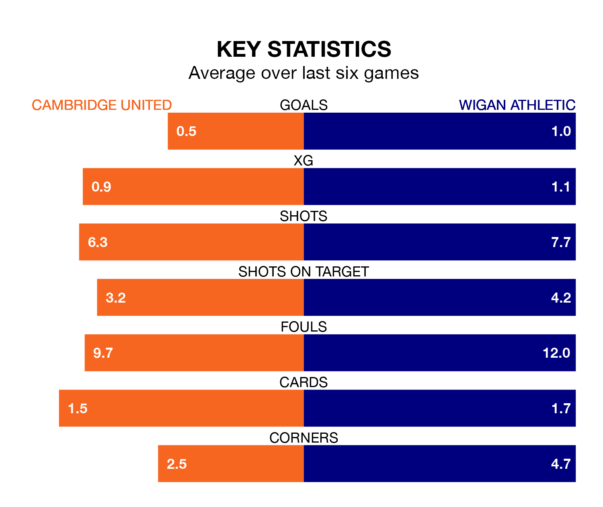

Cambridge United are on a poor run ahead of hosting Wigan Athletic at the Abbey Stadium on Monday, with just four points collected from their last six games.
Cambridge have picked up one win and one draw in their last six EFL League One games, and face a Latics side whose last six games have brought three wins and one draw.
With 34 goals in 39 games so far this season, Cambridge are scoring at below the league average rate with 0.9 goals per game. And they are conceding more than average, letting in 55 goals at a rate of 1.4 per game.
Wigan, meanwhile, are above average scorers, with 1.4 goals per game, compared to a league average of 1.3. They have conceded 1.2 goals per game.
United are 19th in the table after 39 games, of which they have won 11 and drawn nine, earning 42 points.
Athletic are nine places ahead of the home team in 10th, with 17 wins and eight draws putting them on 59 points.
In the last three years, Cambridge and Wigan have played each other on three occasions. They won one each, and they drew once.
Their last meeting was on September 16, when Wigan won 2-1 at home.
Cambridge's last match was on Friday, a 2-0 win against Barnsley, with Gassan Ahadme Yahyai and Mael Durand de Gevigney (own goal) getting the goals for Cambridge.
Wigan drew 1-1 with Burton Albion last time out, also on Friday, with Sam Hughes on the scoresheet.
Monday's match will be refereed by Anthony Backhouse, who has taken charge of six EFL League One games so far this season, issuing one red card and booking 23 players. He has awarded one penalty.
The last Wigan game Backhouse refereed was the 4-2 loss away at Fleetwood Town on March 2. He is yet to oversee a match featuring Cambridge this season.
Updated: 10:31 (UTC), 31/03/24